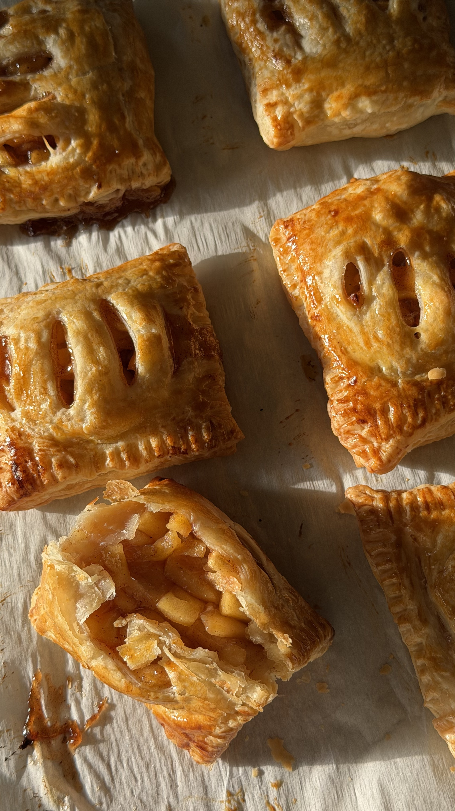

Apple Puff Pasteries

Flaky, golden puff pastry filled with warm cinnamon apples and a little brown sugar.
Ingredients
- 4 small apples, peeled and diced
- ¼ cup brown sugar
- 1 tsp cinnamon
- 1 tbsp all-purpose flour or cornstarch
- 1 tbsp water
For the pastries
- 1 package frozen puff pastry, thawed (usually 2 sheets)
- 1 egg yolk plus a little egg white, beaten (for egg wash)
Instructions
- Add the diced apples, brown sugar, cinnamon, flour or cornstarch, and water to a pan. Cook over medium heat for about 10 minutes, stirring frequently, until the apples soften and the filling thickens. Set aside to cool.
- Preheat the oven to 400°F and line a baking sheet with parchment paper. Cut the thawed puff pastry into rectangles. Make slits on one side.
- Fill the pockets: Spoon the cooled apple filling onto one side of each rectangle, leaving space around the edges. Fold the pastry over the filling and press the edges together with a fork to seal.
- Brush with the beaten egg.
- Place on the prepared baking sheet and bake for 12 minutes. Then increase the heat to 420°F and bake another 4–5 minutes, until puffed and golden brown.
- Let cool for a few minutes before serving. Enjoy warm!
Home